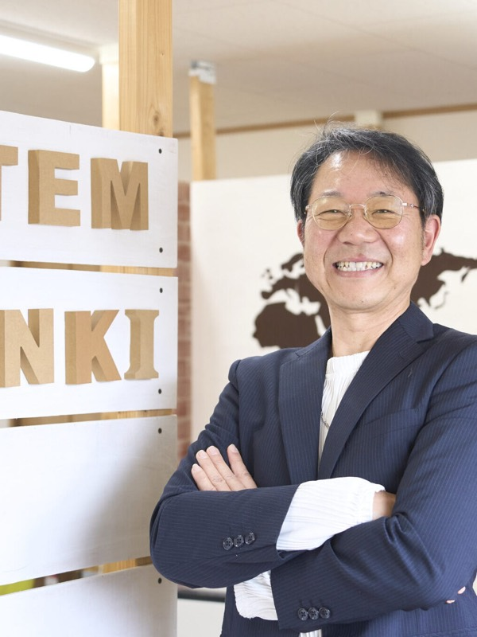
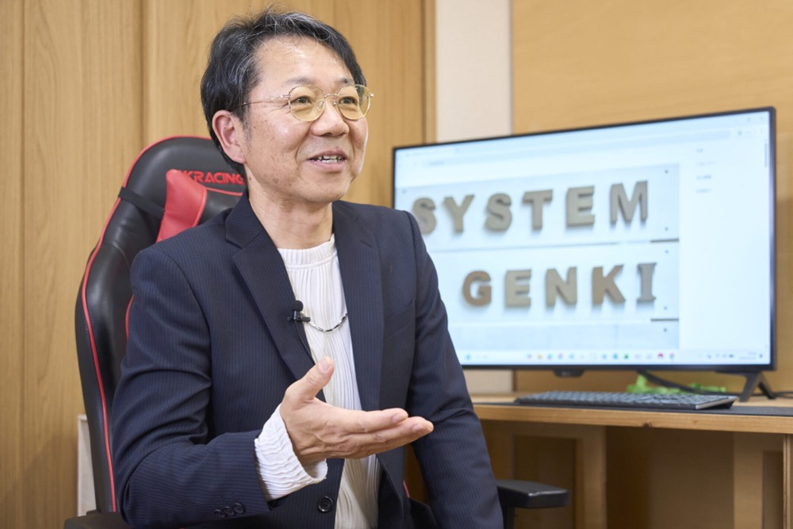
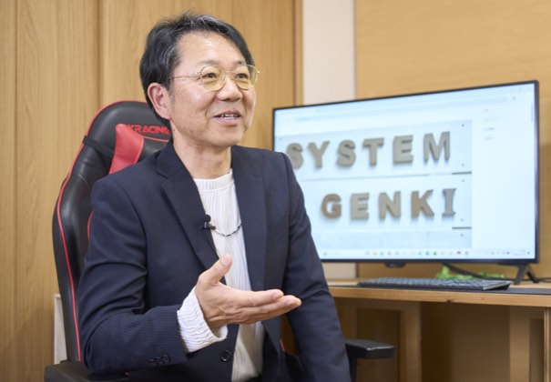
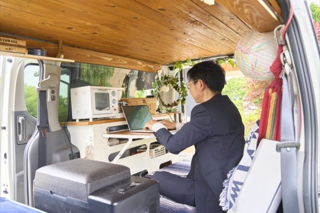
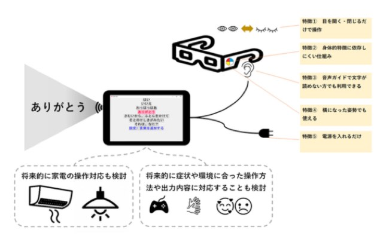
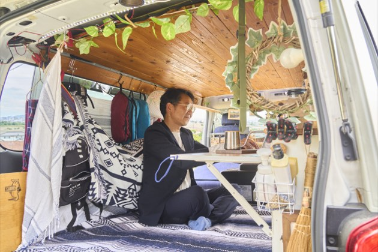
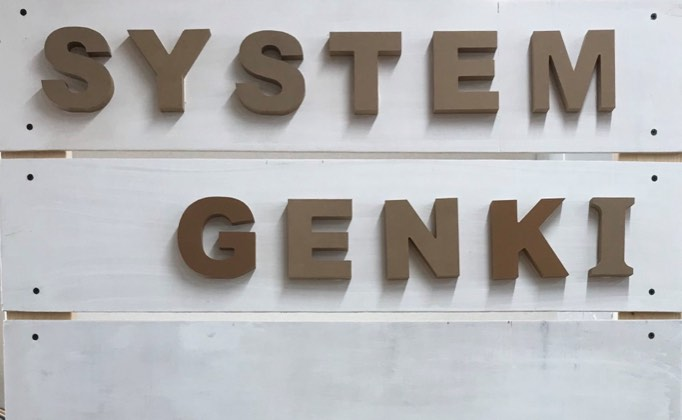
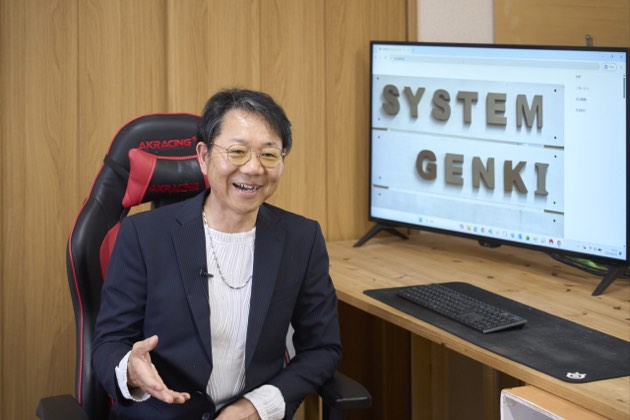
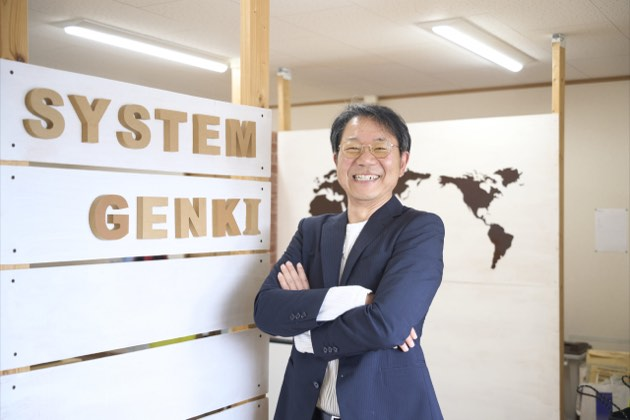
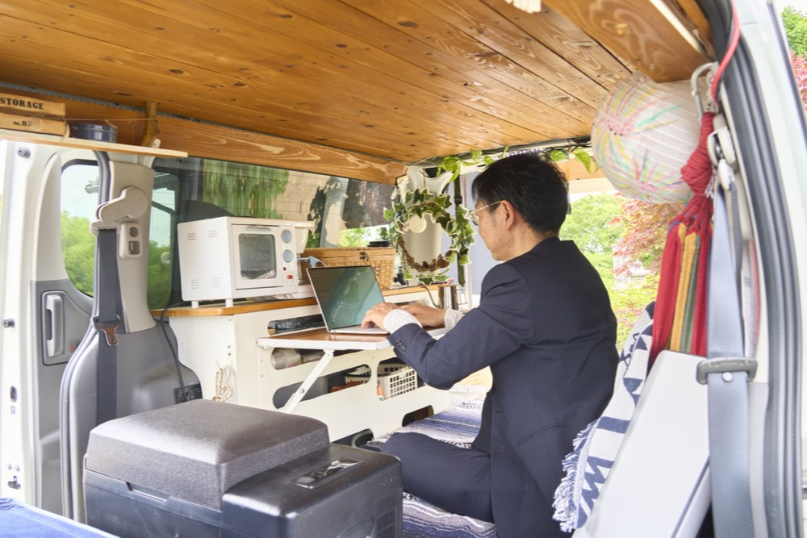

家族を幸せにするIT
小谷 雅彦masahiko kodani
合同会社システムGenKi 代表取締役社長
1973年岡山県生まれ。1991年両備システムズに入社し、セキュリティソフト開発で世界最高速度を達成。システムエンタープライズ等を経て、大手企業の一次請けとして活躍。2008年、仕事と子育ての両立を目指し合同会社システムGenKiを設立。近年はAI技術を早期に導入し ITを活用した環境問題や自由な働き方など社会課題の解決に注力している。
企業サイトを見るCHAPTER 01
過酷な労働環境からの脱却と、理想の会社創設への歩み

Qどのようなきっかけでソフトウェア業界へ進み、その後起業されたのですか?
A私の原点は高校生の頃にあります。父親を亡くし母子家庭で育ったため、少年時代は非常に貧しく、新聞配達などのアルバイトをしていました。当時は「仕事とはしんどいもの」という概念しかありませんでしたが、高校でIT業界を知ったのです。実家にはファミコンがなかったため、「それなら自分で作ってみよう」とプログラミングを始めました。完成したものを友達に遊んでもらい、喜んでくれた時の感動が、ソフトウェア業界へ進むきっかけとなりました。社会人になってからは猛烈に働き、暗号化ソフト開発で世界最高速度を達成するなど社内初のスピード出世を果たしました。仕事を頑張れば家族を幸せにできると信じていたのです。しかし、現実は毎日深夜24時過ぎまで残業が続き、妻はワンオペ育児に追われ限界を迎えていました。現在の労働基準法では月80時間の残業を過労死ラインとしていますが、ピーク時の私はその3倍以上の残業をしていました。 一度業界を離れトラックの運転手を経験した時期もありましたが、過酷な労働環境で事故を起こしたことを機に、改めてITの価値とリスクの低さに気づき業界へ戻りました。退職後、仕事と子育てを両立できる会社を岡山で探しましたがどこにもありませんでした。「ないのなら、自分で理想の会社を作ろう」と決意し、2008年に起業したのが始まりです。
Q起業にあたって、どのような思いを会社名に込められたのでしょうか?
A会社名は「合同会社システムGenKi」と名付けました。私自身、人一倍声が大きく元気がある方なのですが、私たちが得意とするシステム開発やITの技術を通じて、自分が生まれ育ち、深く愛する岡山の地域社会を元気にしていきたいという強い恩返しの思いを込めています。これまでの会社員人生で培ってきた最高の技術力を活かし、地元の企業や人々に貢献すること。そして、一緒に働く従業員がワークライフバランスを保ちながら、自分らしい働き方を実現できる「温かい場所」にすることを目指しました。仕事一辺倒で家族を犠牲にするのではない、家庭も仕事もどちらも大切にできる持続可能な組織を岡山から発信したいという決意が、この社名と創業の理念に息づいています。
CHAPTER 02
大手企業との信頼が紡ぐ、少数精鋭チームの技術力
Q御社の事業の特徴や、小さな組織ながら大手企業と直接取引ができる強みについて教えてください。
A私たちの業界は元請けから二次受け、三次受けへと仕事が下りてくるピラミッド構造が当たり前の世界です。しかし弊社は従業員3名という非常に小さな規模でありながら、大手企業の「一次請け」としてソフトウェアの受託開発を行っていることが最大の強みです。これが可能なのは、私を含めたメンバーの徹底的な技術力と、職人気質なこだわりがお客様に認められているからです。かつて私が暗号化処理プログラムで世界最高速度を叩き出した時のように弊社には「誰もできないレベルまでとことん性能を追求する」という凝り性のDNAがあります。インフラ構築から設計、プログラミング、運用保守まで、どの分野でも業界トップクラスの経験を提供できるため、大手企業様からも「システムGenKiに直接任せたい」と、厚い信頼をいただいています。
Q世界的なブームが起こる前の2020年からAI開発に着手されているのはなぜですか?
Aブームになってから動くのでは遅いという技術者としての先見の明があったからです。現在の生成AIブームは2022年末のChatGPTリリースが起点ですが、弊社はそれより2年も早い2020年からディープラーニングなどのAI技術に着目し、開発を進めてきました。さらに、会社の変化に左右されない「個人としての本物の技術力」を高めるため、従業員全員が複数のAI関連資格を取得し、常に最新のリスキリングを継続しています。2020年には、脳卒中で寝たきりになった叔父の介護現場で意思疎通に苦しむ姿を見たことがきっかけで、AIを用いた画像解析ソフトを開発しました。寝たきりの方でも視線や瞬きの動きをAIが学習・判定し、意思を音声や文字に変えるシステムをクラウドファンディングで資金調達して形にしました。技術は人を助けるためにあるべきだという信念のもと、最先端のAIをいち早く地域社会や福祉へ還元する挑戦を続けています。







CHAPTER 03
ワークライフバランスの危機と自社アプリへの転換

Q順調に業績を伸ばす中で、会社に大きな影響を与えたエピソードはありますか?
A一次請けの受託開発をメインに、売上は非常に順調に伸びていました。しかし受託開発というものは自社でリリースの時期をコントロールできません。クライアントの要望に応えるため、どうしてもタイトなスケジュールの案件が多くなってしまいました。その結果、私の理想の会社であったはずなのに2021年に関係会社を含めた従業員数名が過労からうつ病になりかけて離脱してしまうという痛恨の出来事が起きたのです。
Q現在最も注力している取り組みとこれからの目標について教えてください。
A現在は安定した受託の仕事をあえて減らし自社主導でスケジュールを調整できる新規のアプリ事業に全力でシフトしています。その第1弾として開発したのが、自社収益のノウハウを蓄積するためのウォーキングアプリ「浮世歩」です。そして現在最も注力しているのが、美しい地球を未来へ受け継ぐためのアプリ「未来散歩」(仮称)の開発です。これは、世界的な問題である海洋プラスチックごみ問題の解決など、ITの力で具体的な社会課題を解決することを目指しています。